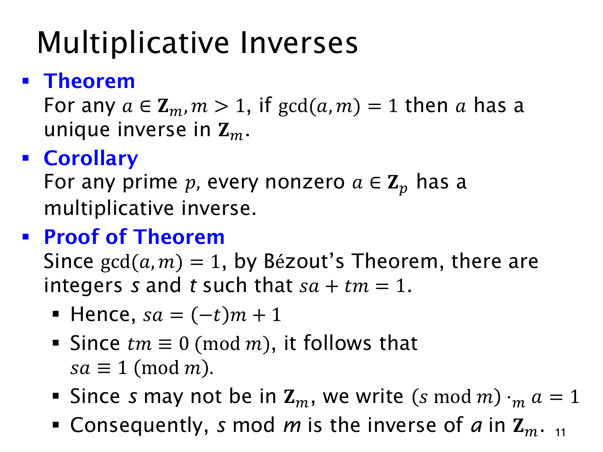

L1.13 · 第 11 页讲解原文
查看这一页课件

逆元存在，恰好要求互素
设 m>1、a∈Zm。若 gcd(a,m)=1，Bézout 定理给出整数 s,t 满足
sa+tm=1.
模 m 后，tm 余零，便有 sa≡1(modm)。s 未必已经在标准范围，取 smodm 就得到 Zm 中的逆元。扩展欧几里得算法求出的系数因此能用于求逆。
逆元还唯一。若 b,c∈Zm 都是 a 的逆元，那么
b≡b(ac)≡(ab)c≡c(modm).
两个数都在 0 至 m−1 内，同余便意味着相等。整数中可以有无限多个同余代表，这里的唯一只指标准代表。
反过来，若 ab≡1(modm)，便有 ab−km=1。a,m 的任何公约数都整除右边的 1，故 gcd(a,m)=1。互素也是必要条件。
素数 p 下，每个 1≤a<p 都与 p 互素，所以每个非零元素都有逆元；零不满足这个条件。